Murmur records your calls and transcribes them on-device. Run AI locally, or explicitly opt into redacted cloud AI; your meeting archive stays on your Mac.
Signed & notarized · macOS 13.4+ · Apple Silicon & Intel · your notes stay Markdown you own
One local-first pipeline turns a live call into searchable memory. Transcription stays on your Mac; AI can run locally or, with explicit consent, use redacted cloud processing.
Your mic and the other side's system audio, captured and transcribed separately, then merged into a clean Me / Others transcript by on-device Whisper.
A reasoning model runs locally over a semantic index of everything you've recorded — writing a structured note and keeping the memory searchable forever.
Say a wake phrase mid-meeting and get a grounded answer with sources — or ask across months of calls afterward. The recording never stops.
Murmur is designed so transcription, search, and local AI can run with no network at all — once you switch off the one thing that does reach out: a launch-time check for a new version. If you choose cloud AI, consent and a redaction firewall sit in front of that egress.
With an on-device model you download once, or Ollama, your audio and transcripts never touch a network. The reasoning happens on your Mac.
The whole database is SQLCipher-encrypted. On top, a per-folder AES-256-GCM lock adds content keys wrapped by a master key released only by Touch ID.
A sealed, locked folder leaks nothing — across the app, search, the graph, MCP, even the audio path. Locked meetings simply show as 🔒 Locked.
Murmur proves the ciphertext decrypts back before it ever blanks the plaintext — content is never lost, and locking is fully reversible.
A watcher can auto-relock sealed folders and wipe the cached key the moment screen sharing is detected — so a shared screen can't spill private notes.
If you ever opt into a cloud summarizer, emails, card-like numbers and phone numbers are scrubbed first — and cloud egress is fail-closed behind a one-time consent. Download the optional name-masking model and people’s names are replaced too.
At launch Murmur asks GitHub whether a newer version exists. The request says which version of Murmur you are running, because that is how it asks the question — and nothing else: no meetings, no notes, no account. You can switch it off in Settings → Privacy. It is the only thing on this page that happens without you asking for it, which is exactly why it is on this page.
| Brain / provider | Where it runs | Does meeting text leave your Mac? |
|---|---|---|
| On-device brain (Bielik / Qwen) | Fully local | No |
| Ollama | Fully local | No |
| Claude Code (default summarizer) | Local CLI → cloud | Only after consent; redaction firewall applied |
| Codex (OpenAI's CLI, run tool-free) | Local CLI → cloud | Only after consent; redaction firewall applied |
| Anthropic API (bring your own key) | Direct HTTPS | Only after consent; redaction firewall applied |
| AI Gateway (any OpenAI-compatible endpoint — LiteLLM, Kong, Portkey, vLLM…) | Direct HTTPS | Only after consent; redaction firewall applied |
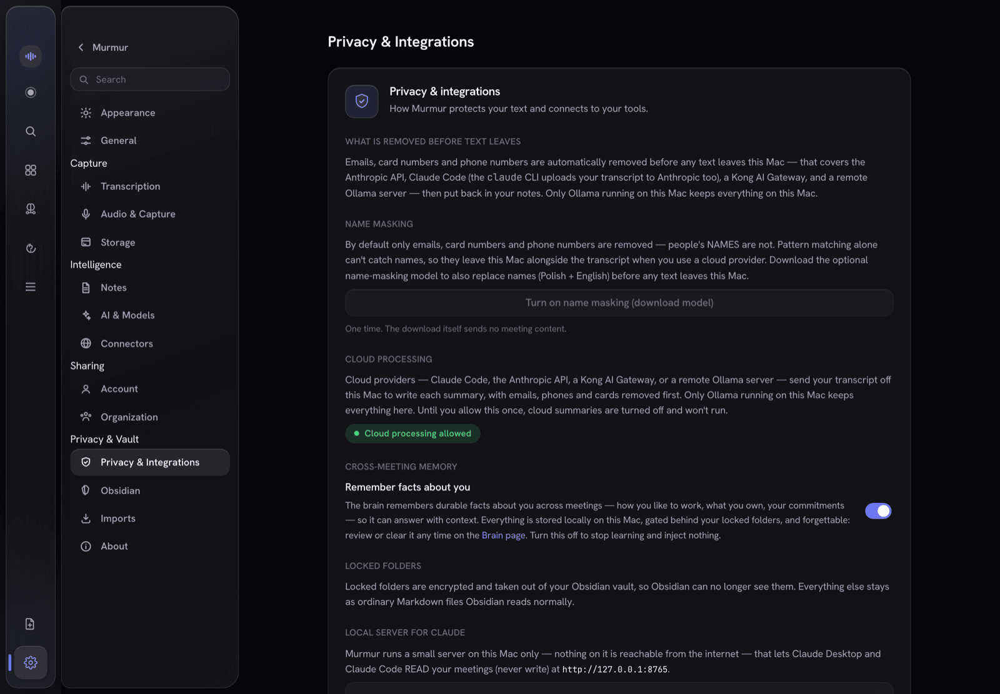
One encrypted store, three ways to use it — the app, a local MCP server, and your exported Markdown files.
Murmur is built around a single tree, with composable boards on top of it, and an offline import path for the notes you already have somewhere else.
The separate Meetings and Notes folder trees are gone. There's now a single tree — Workspaces › folders › your recordings and notes — in one sidebar that collapses to a rail when you want the room. Lock a Workspace and everything inside it is sealed with it.
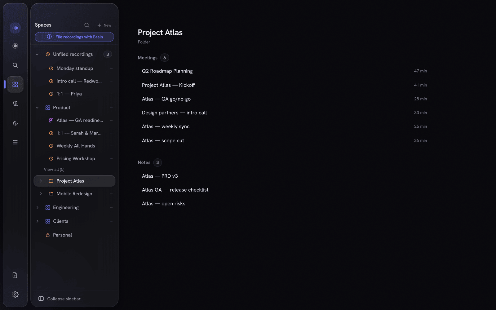
Pull notes, recordings, documents, people, promise ledgers and reminders onto a board, then read it through Brief / Overview / Commitments / Sources / People lenses. Pin a living answer — a question the app keeps up to date, and withholds the moment its sources stop being readable. You can ask a board directly, grounded only in what's on it.
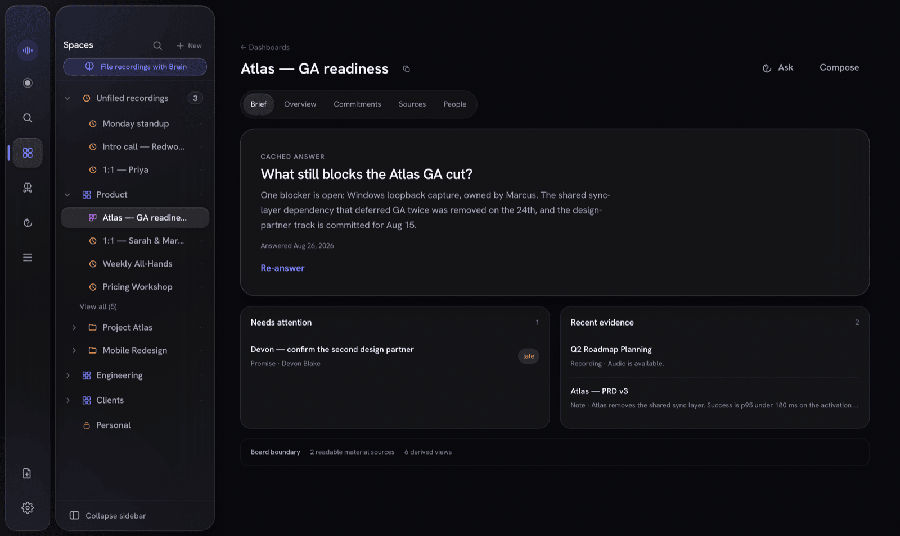
Settings → Imports pulls in a Notion export, an Obsidian vault, or Apple Notes. Entirely offline — no account, no key, no network call. Every import is a dry run first, so you see what it would write before it writes anything. (Apple Notes asks macOS for permission the first time.)
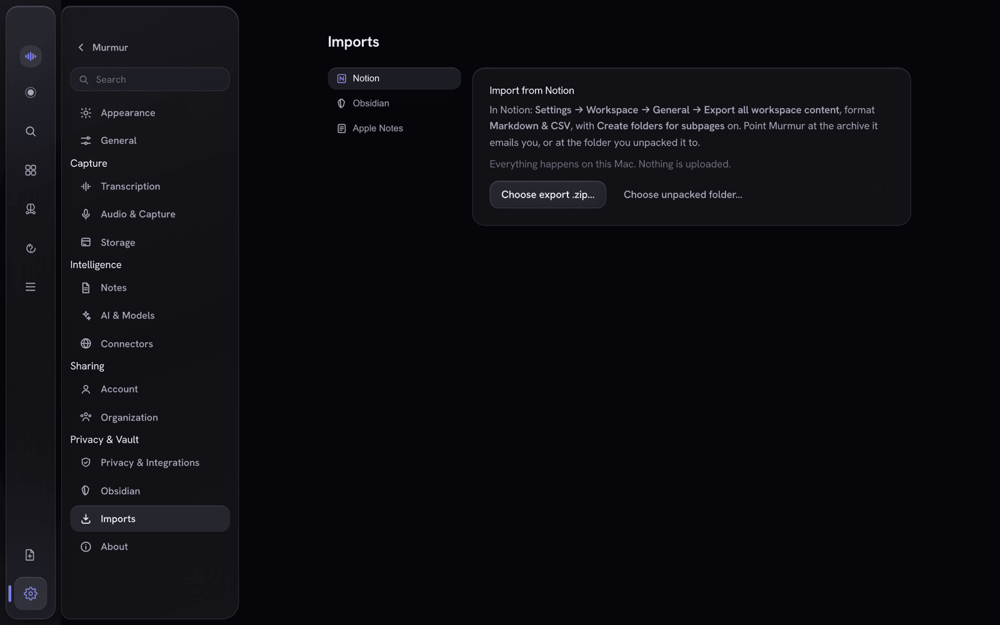
This is the part most note-takers don't have. Trigger it by wake phrase or a single tap; it answers out of your meeting memory, live, with citations you can open — and the recording never stops.
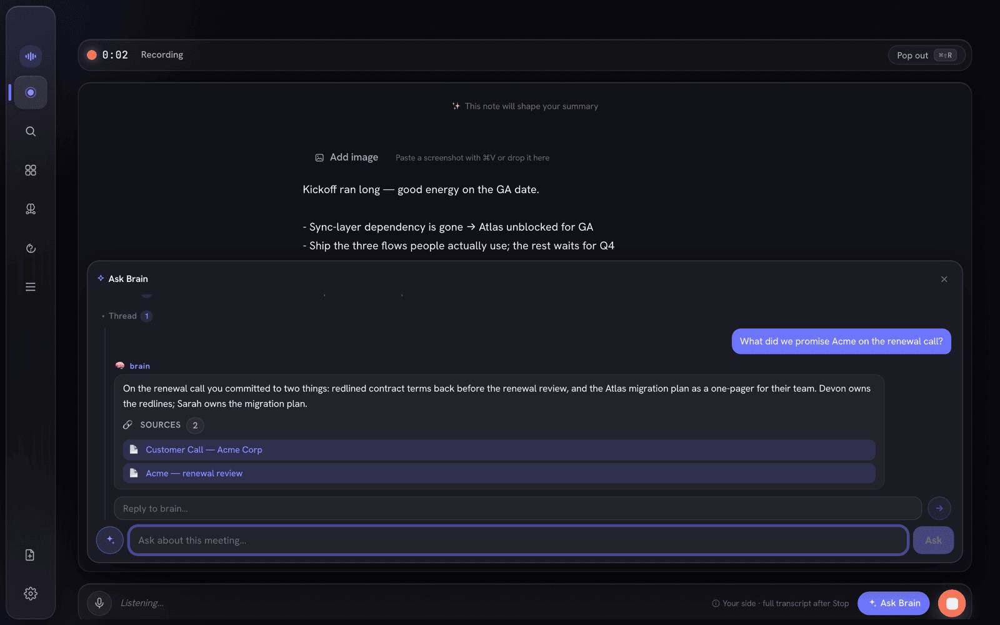
The same brain, pointed at everything you have ever recorded and written. Every answer arrives with the meetings and notes it was drawn from, so you can open the source instead of taking its word.
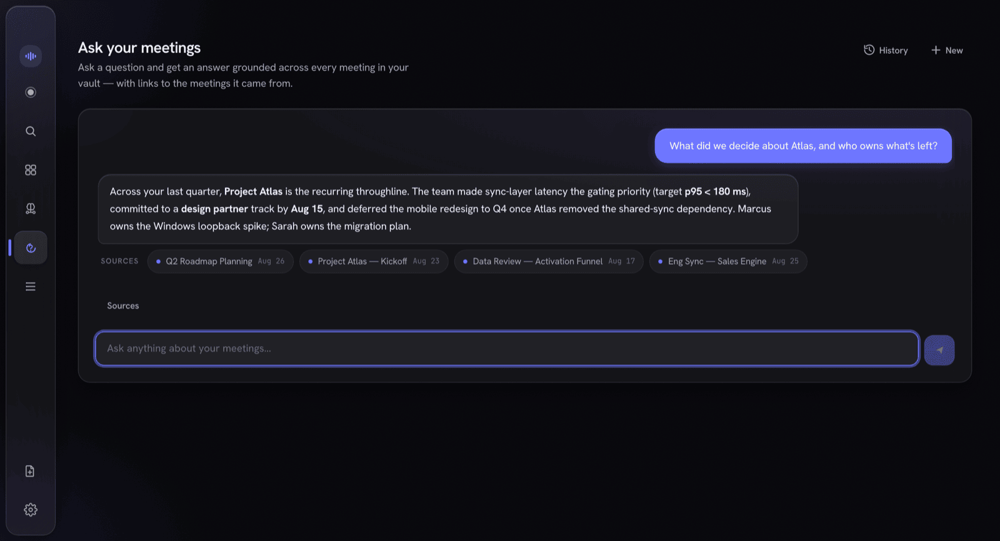
Dual-stream recording captures your mic and the other side's system audio, transcribes each independently on-device, and merges them by wall-clock into a clean Me / Others transcript with live captions as you speak.
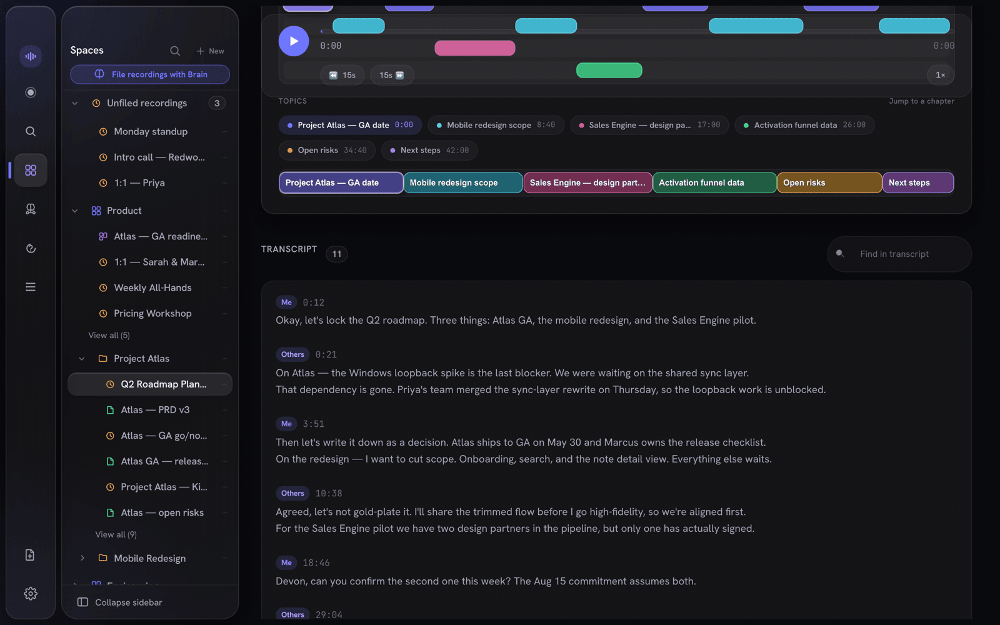
Every call becomes a clean note — summary, decisions, action items, quotes. Recordings and notes live side by side in the same Workspace. People and projects are extracted automatically into a knowledge graph, and sealed Workspaces stay hidden from it.
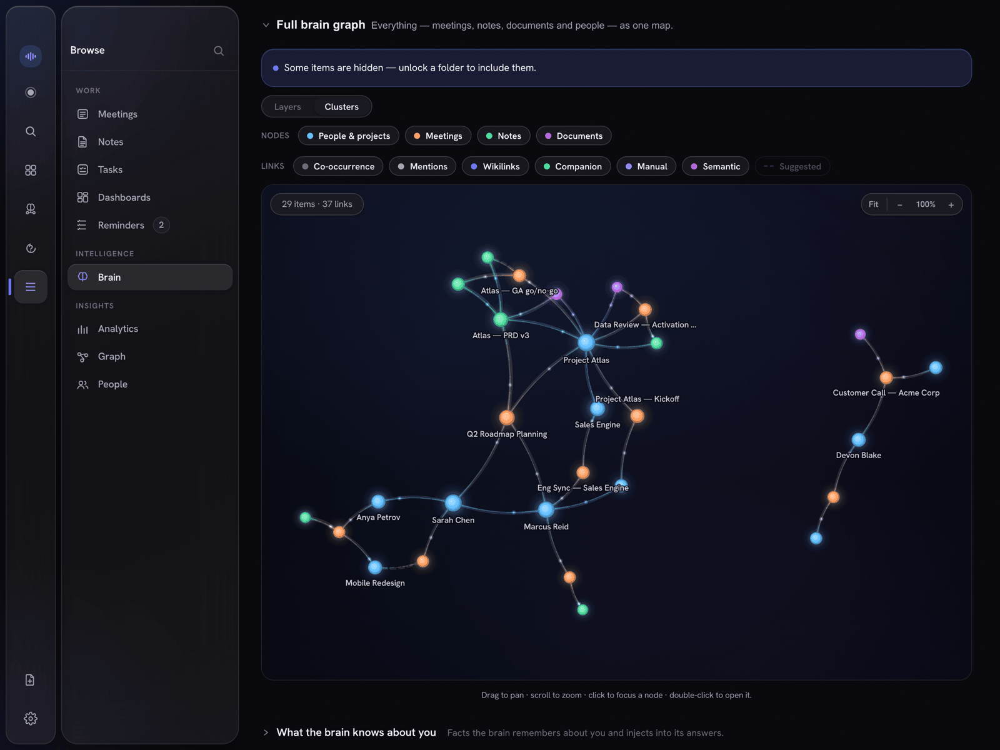
Murmur's notes don't ask you to trust them. Each line that's grounded in what was actually said carries a receipt — click it to jump straight to that second of audio, with the speaker and confidence. Paraphrased or unsupported lines get none, so you can see at a glance what's verified.
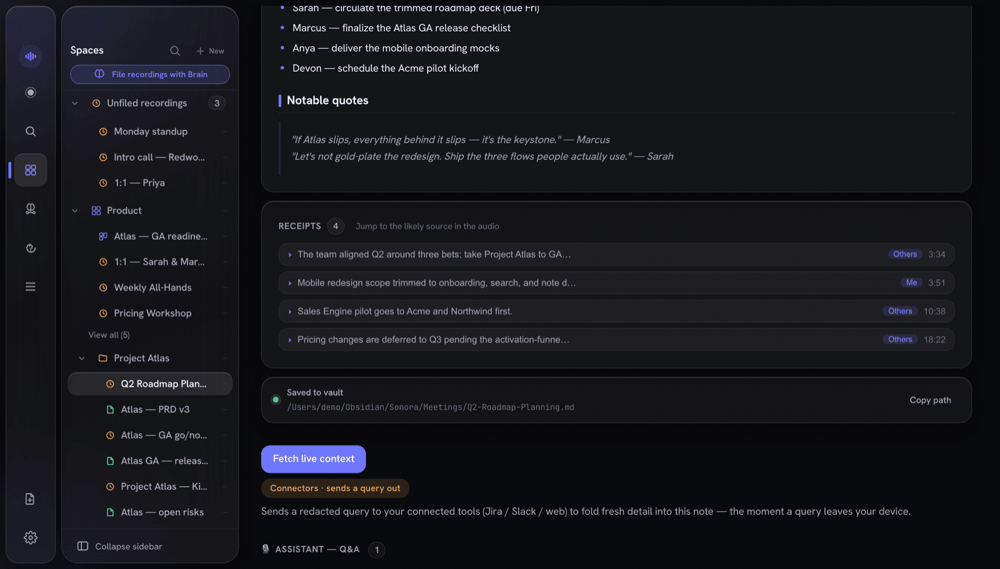
Every note is also exported as atomic Markdown — YAML front-matter, [[wikilinks]], block deep-links, and a canvas board option. They're just plain files you own, openable in any editor.
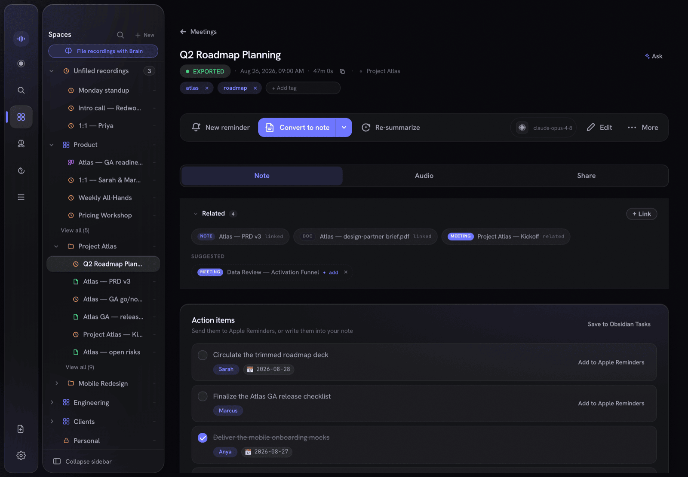
A full Markdown editor, filed in the same Workspaces as your recordings — for anything you write, not just what Murmur transcribes. Select any passage and a command menu appears: refine, shorten, change tone, translate, fact-check, or just type what you want done.
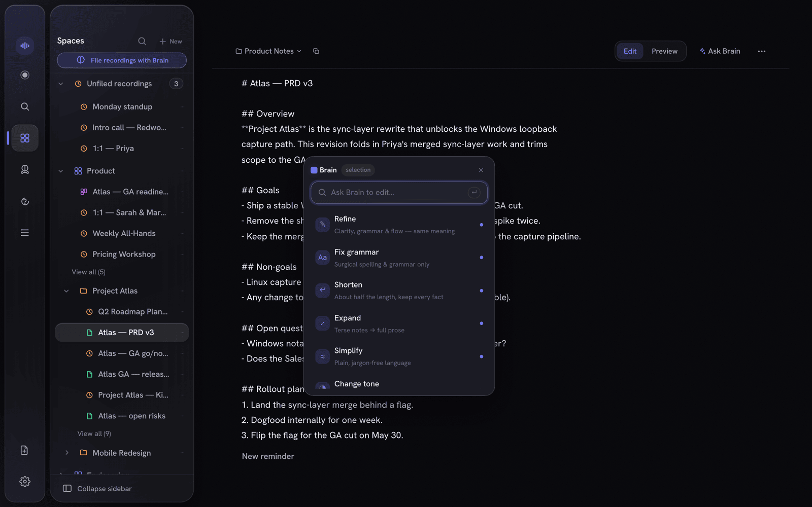
Publish a note or meeting summary into your org's Shared Brain and it stays in sync for every member as you edit. Everything is sealed on your Mac before it ever leaves — the server only ever stores ciphertext, wrapped keys, and public keys.
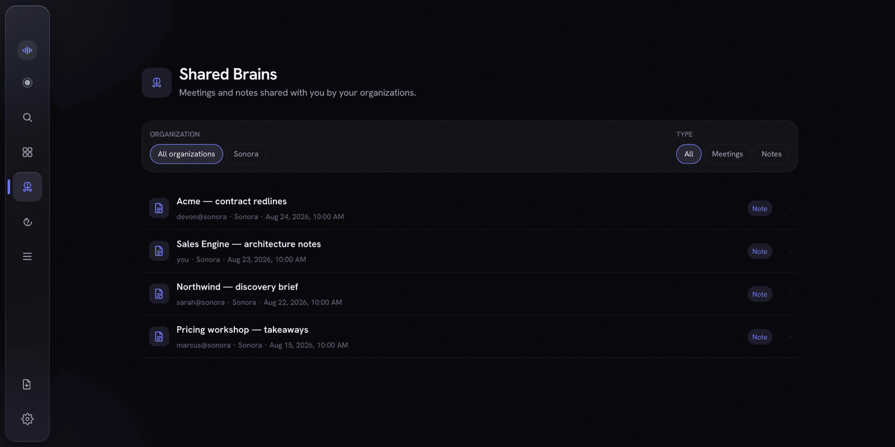
Local recording, transcription, notes, and Markdown exports need no account or payment. Pricing and availability beyond early access will be announced separately.
Local recording, transcription, notes, and exports.
Pricing and availability to be announced.
Pricing and availability to be announced.
Pricing and availability beyond early access will be announced separately.
Local-first for macOS. Keep AI local, or explicitly opt into redacted cloud AI when you choose.
Using Murmur 2.8.0 or earlier? Its update check can no longer reach us. Download the latest release once and drag it into Applications, replacing the old copy; your library, recordings and settings stay where they are. From Murmur 2.9.0 on, the app finds new versions by itself.